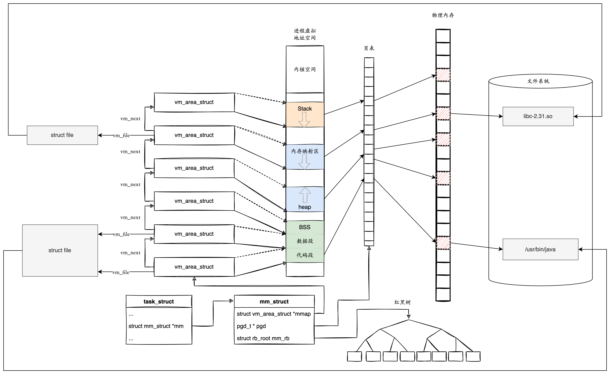
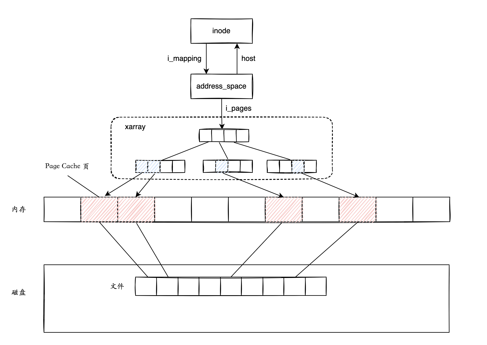
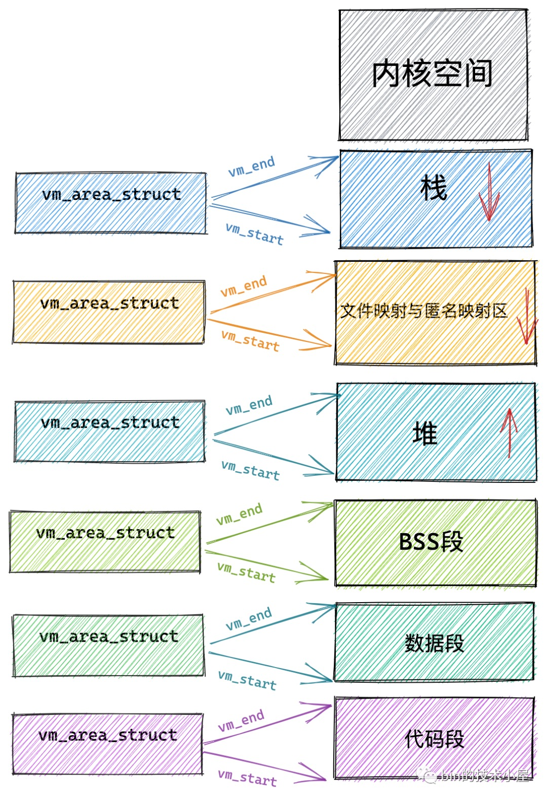
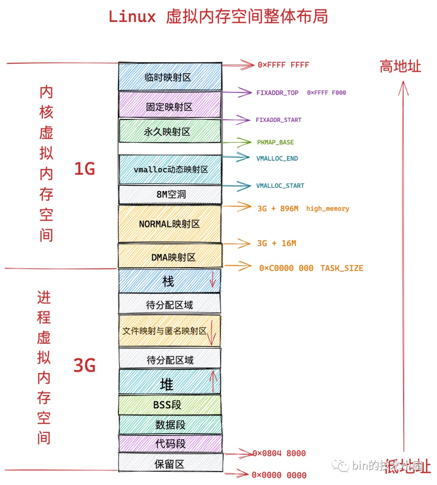
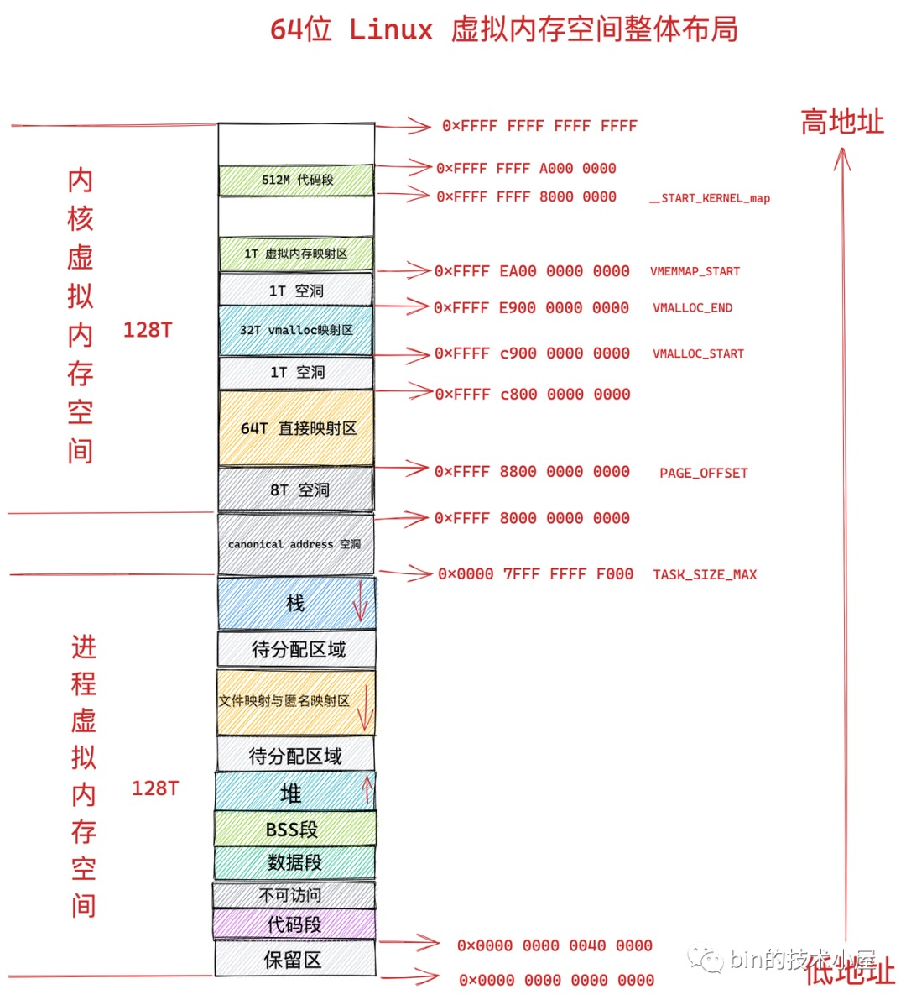
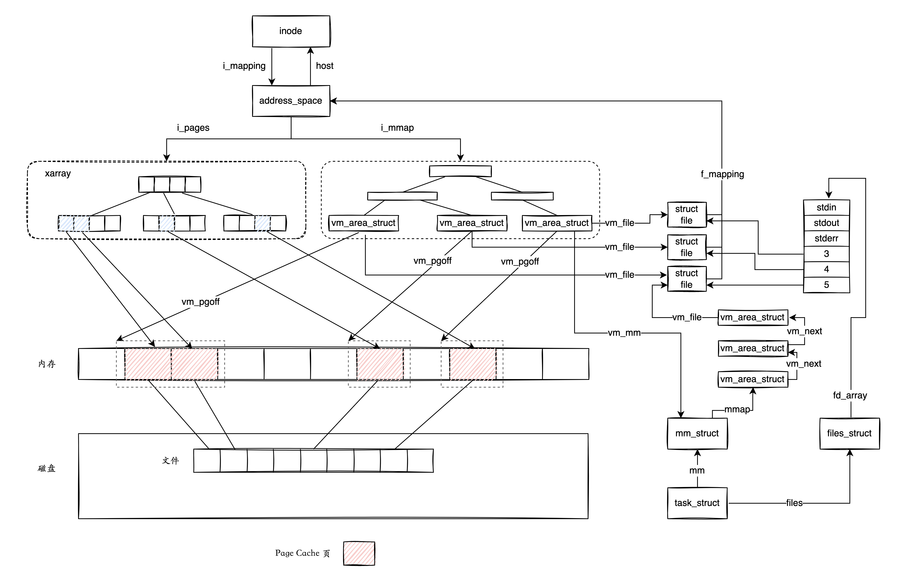

概述
一 Linux 如何对用户空间的虚拟内存进行管理
1 数据结构


-
进程的虚拟地址是线性的，使用结构体 vm_area_struct 来描述。内核将每一段具有相同属性的内存区域当作一个 vm_area_struct 进行管理，每个 vm_area_struct 是一个连续的虚拟地址范围，这些区域不会互相重叠。 mm_struct 里面有一个单链表 mmap，用于将 vm_area_struct 串联起来，另外还有一颗红黑树 mm_rb ，vm_area_struct 根据起始地址挂在这颗树上。使用红黑树可以根据地址，快速查找一个内存区域。
-
vm_area_struct 可以直接映射到物理内存，也可以关联文件。如果 vm_area_struct 是文件映射，由成员 vm_file 指向对应的文件指针。一个没有关联文件的 vm_area_struct 是匿名内存。
-
开发者使用 malloc 等 glibc 库函数分配内存的时候，不是直接分配物理内存，而是在进程的虚拟内存空间中申请一段虚拟内存，生成相应的数据结构 vm_area_struct ，然后将它插进 mm_struct 的链表 mmap，同时挂在红黑树 mm_rb 上，就算完成了工作，根本没有涉及到物理内存的分配。只有当第一次对这块虚拟内存进行读写时，发现该内存区域没有映射到物理内存，这时会触发缺页中断，然后由内核填写页表，完成虚拟内存到物理内存的映射。
-
当开发者使用 mmap 进行文件映射时，内核根据 vm_area_struct 中代表文件映射关系 vm_file，将文件内容从磁盘加载到物理内存，也就是 Page Cache 中，最后建立这段虚拟地址到物理地址的映射。

-
inode 通过 address_space 管理着文件已加载到内存中的内容，也就是 Page Cache。address_space 的字段 i_pages 指向一棵 xarray 树，与这个文件相关的 Page Cache 页都挂在这颗树上。我们在访问文件内容的时候，根据指定文件和相应的页偏移量，就可以通过 xarray 树快速判断该页是否已经在 Page Cache 中。如果该页存在，说明文件内容已经被读取到了内存，也就是存在于 Page Cache 中；如果该页不存在，就说明内容不在 Page Cache 中，需要从磁盘中去读取。
-
由于文件和 inode 一一对应，我们可以认为 inode 是 Page Cache 的宿主（host），内核通过
inode->imapping->i_pages指向的树，管理维护着 Page Cache。 -
一个文件(inode)只能有 一个 address_space 数据结构, 表示 Page Cache 的一个实例。（假设 Page Cache 是有多个实例组成, 分两层看，上层的单个实例就是一个 address_space 实例，底层的单个实例就是一个一个 struct page)
2 关于虚拟内存空间的权限

3 定义虚拟内存区域的访问权限和行为规范
vm_page_prot 和 vm_flags 都是用来标记 vm_area_struct 结构表示的这块虚拟内存区域的访问权限和行为规范。
上边小节中我们也提到，内核会将整块物理内存划分为一页一页大小的区域，以页为单位来管理这些物理内存，每页大小默认 4K 。而虚拟内存最终也是要和物理内存一一映射起来的，所以在虚拟内存空间中也有虚拟页的概念与之对应，虚拟内存中的虚拟页映射到物理内存中的物理页。无论是在虚拟内存空间中还是在物理内存中，内核管理内存的最小单位都是页。
vm_page_prot 偏向于定义底层内存管理架构中页这一级别的访问控制权限，它可以直接应用在底层页表中，它是一个具体的概念。
虚拟内存区域 VMA 由许多的虚拟页 (page) 组成，每个虚拟页需要经过页表的转换才能找到对应的物理页面。页表中关于内存页的访问权限就是由 vm_page_prot 决定的。
vm_flags 则偏向于定于整个虚拟内存区域的访问权限以及行为规范。 描述的是虚拟内存区域中的整体信息，而不是虚拟内存区域中具体的某个独立页面。它是一个抽象的概念。可以通过 vma->vm_page_prot = vm_get_page_prot(vma->vm_flags) 实现到具体页面访问权限 vm_page_prot 的转换
下面笔者列举一些常用到的 vm_flags 方便大家有一个直观的感受：
| vm_flags | 访问权限 |
|---|---|
| VM_READ | 可读 |
| VM_WRITE | 可写 |
| VM_EXEC | 可执行 |
| VM_SHARD | 可多进程之间共享 |
| VM_IO | 可映射至设备 IO 空间 |
| VM_RESERVED | 内存区域不可被换出 |
| VM_SEQ_READ | 内存区域可能被顺序访问 |
| VM_RAND_READ | 内存区域可能被随机访问 |
| VM_READ，VM_WRITE，VM_EXEC | 定义了虚拟内存区域是否可以被读取，写入，执行等权限。 |
比如代码段这块内存区域的权限是可读，可执行，但是不可写。数据段具有可读可写的权限但是不可执行。堆则具有可读可写，可执行的权限（Java 中的字节码存储在堆中，所以需要可执行权限），栈一般是可读可写的权限，一般很少有可执行权限。而文件映射与匿名映射区存放了共享链接库，所以也需要可执行的权限。
二 Linux 如何对内核空间的虚拟内存进行管理
1 32 和 64 位 Linux 虚拟空间的整体布局


2 各个 zone 的用途和水位的作用
- zone_dma
- zone_normal
-
zone_high
-
注意, 这里的 zone_dma 和 zone_normal 是直接映射区域, 和物理内存区域是一一对应的
- 其他各类 zone, 比如 zone_high 就和物理内存区域不是一一对应的. 64 位 Linux 上也是如此, 有直接映射区域和非直接映射区域
三 Linux 如何对物理内存进行管理
-
首先上来三种物理内存模型, 平坦模型、非连续内存模型、稀疏内存模型
-
再次是两种内存架构, UMA 和 NUMA.
-
然后是《第六章 第一篇》提到的Node、Zone、free_area、Page 之间的关系
四 文件映射（Page Cache 申请使用和释放)
1 Page Cache 是什么
- 假设系统所有内存都是一个数组的话, 数组每个元素是一个 struct page, 其中部分元素（page）就是 Page Cache
- inode 是 Page Cache 的宿主（host），内核通过 inode->imapping->i_pages 指向的树，管理维护着 Page Cache。
2 用了 Page Cache 之后有什么好
- 在本机做了实验，来体会一下 Page Cache 的作用。首先生成一个 1G 大小的文件：
# dd if=/dev/zero of=/root/dd.out bs=4096 count=262144
- 清空 Page Cache：
# sync && echo 3 > /proc/sys/vm/drop_caches
- 统计第一次读取文件的耗时：
# time cat /root/dd.out &> /dev/null
real 0m2.097s
user 0m0.010s
sys 0m0.638s
- 再此读取同一个文件，由于系统已经将读取过的文件内容放入了 Page Cache ，这次耗时大大缩短：
# time cat /root/dd.out &> /dev/null
real 0m0.186s
user 0m0.004s
sys 0m0.182s
- Page Cache 不仅能加速对文件内容的访问，对共享库建立 Page Cache，可以在多个进程间共享，避免每个进程都单独加载，造成宝贵内存资源的浪费。
3 怎么申请和释放
- inode 是 Page Cache 的宿主（host），内核通过 inode->imapping->i_pages 指向的树，管理维护着 Page Cache。那么内核是如何完成内存文件映射，直接把缓存了文件内容的 Page Cache 映射到进程虚拟内存空间的呢？

-
我们知道，进程结构体 task_struct 中的字段 mm 指向该进程的虚拟地址空间 mm_struct ，而一段虚拟内存由结构体 vm_area_struct 所描述，将 vm_area_struct 串在一起的链表 mmap 就代表了已经申请分配的虚拟内存。
-
如果是进行内存文件映射，那么映射了文件的虚拟内存区域 vm_area_struct ，它的 vm_file 会指向被映射的文件结构体 file。file 表示进程打开的文件，它的成员 f_mapping 指向 address_space，这样就和管理文件着 Page Cache 的 address_space 关联了起来。
-
当第一次访问文件映射的虚拟内存区域时，这段虚拟内存并没有映射到物理内存，这时会触发缺页中断。内核在处理缺页中断时，发现代表这段虚拟内存的 vm_area_struct 有关联的文件，即 vm_file 字段指向一个文件结构体 file。内核拿到该文件的 address_space，根据要访问内容的页偏移量，对 address_space->i_pages 指向的 xarray 树进行查找。这颗树上挂的都是页偏移量对应的内存页，如果没找到，就说明文件内容还没加载进内存，就会分配内存页，将文件内容加载到内存中，然后把内存页挂在 xarray 树上。下次再访问同样的页偏移量时，文件内容已经在树上，可直接返回。 address_space->i_pages 指向的树就是内核管理的 Page Cache。
-
将文件内容加载到 Page Cache 后，内核就可以填写进程相关的页表项，将这块文件映射的虚拟地址区域，直接映射到 Page Cache 页，完成缺页中断的处理。
-
当内存紧张需要回收 Page Cache 时，内核需要知道这些 Page Cache 页映射到了哪些进程，这样才能修改进程的页表，解除虚拟内存和物理内存的映射。我们知道，同一个文件可以映射到多个进程空间，所以需要保存反向映射关系，即根据 Page Cache 页找到进程。
-
Page Cache 页的反向映射关系保存在 address_space 维护的另一颗树 i_mmap。address_space->i_mmap 是一个优先查找树（Priority Search Tree），关联了这个文件 Page Cache 页的 vm_area_struct 就挂在这棵树上，而这些 vm_area_struct 都将指向各自的进程空间描述符 mm_struct，从而建立了 Page Cache 页到进程的联系。
-
当需要解除一个 Page Cache 页的映射时，利用 address_space->i_mmap 指向的树，查找 Page Cache 页映射到哪些进程的哪些 vm_area_struct，从而确定需要修改的进程页表项内容。
-
简单总结一下，一个 inode 对应的 address_space 主要管理着两颗树：i_pages 指向的 xarray 树，维护着的所有 Page Cache 页；i_mmap 指向的 PST 树，维护着文件映射所形成的 vm_area_struct 虚拟内存区域，用来在释放 Page Cache 页时，查找映射了该文件的进程。如果文件没有被映射到进程空间，那么 i_mmap 对应的 PST 树为空。